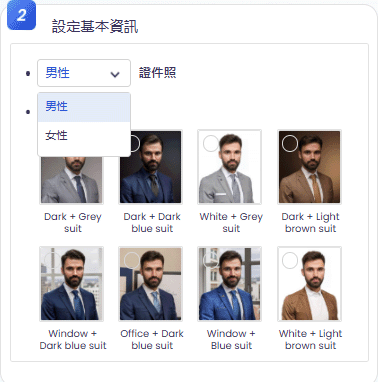
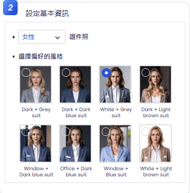
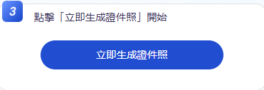
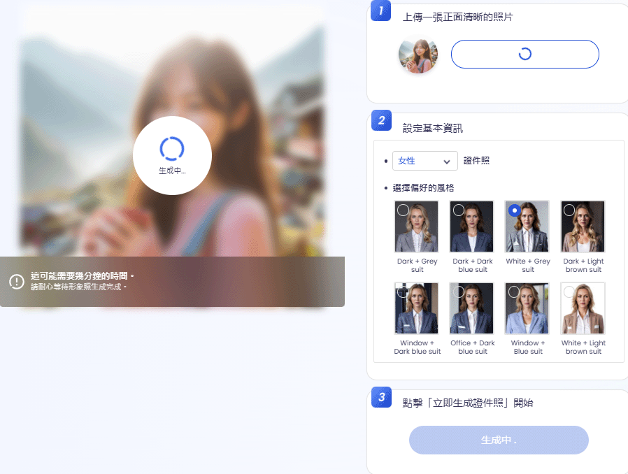
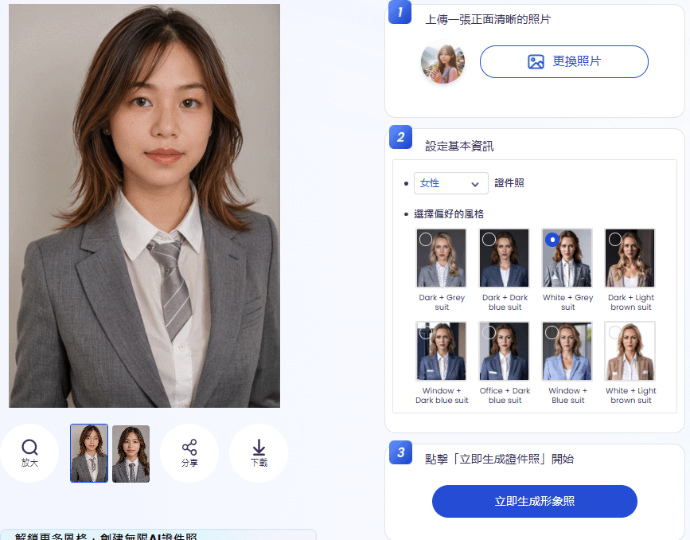

AI 證件照生成器
Vidnoz AI 提供 照片轉證件照功能，能夠將日常照片智能轉換為符合標準的證件照。
以下是 Vidnoz AI 生成證件照的基本流程：
使用步驟

步驟 2：基本設定：
選擇性別與證件樣式。
 步驟 3：生成證件照
點擊生成證件照
生成中

步驟 4：下載與應用
完成後，可下載高解析度證件照，適用於線上提交、列印或申請文件。
完成
Vidnoz AI 證件照生成 功能適合 護照辦理、考試報名、求職申請 等場景，
讓日常照片一鍵變成標準證件照，省時又便利！
注意事項
本工具提供免費使用，可輕鬆生成高品質頭像，打造更專業的證件照效果。請注意以下事項：
- 圖片要求： 建議使用高解析度正面照片，以確保生成效果清晰。
- 背景處理： 最好使用簡單背景，避免雜亂背景影響 AI 處理。
- 光線條件： 建議選擇均勻光線的照片，避免過暗或過曝影響效果。
- 生成限制： 可能無法自訂細節，如特定服裝、表情或髮型。
- 適用場景： 適合用於履歷、LinkedIn、證件照等正式場合，但不適用於藝術風格照片。
返回首頁